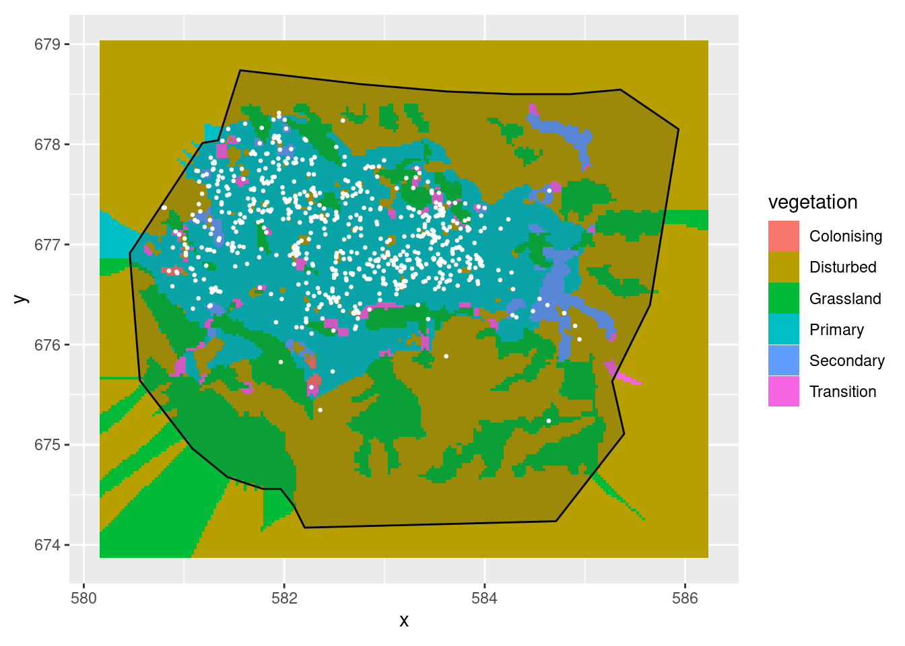
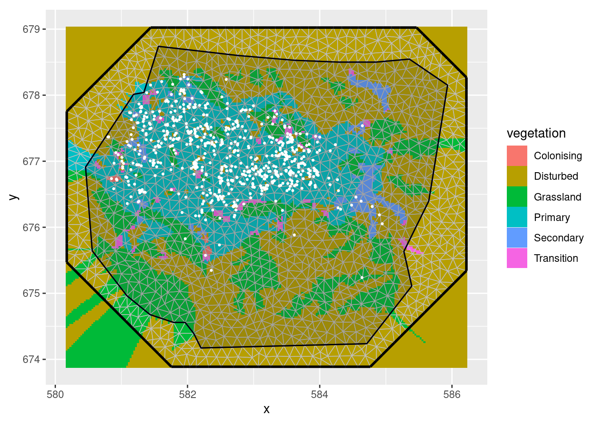
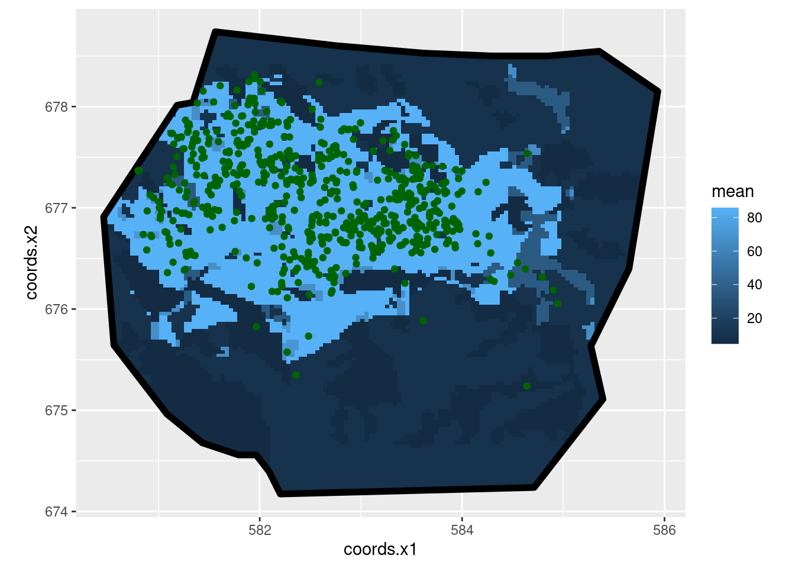
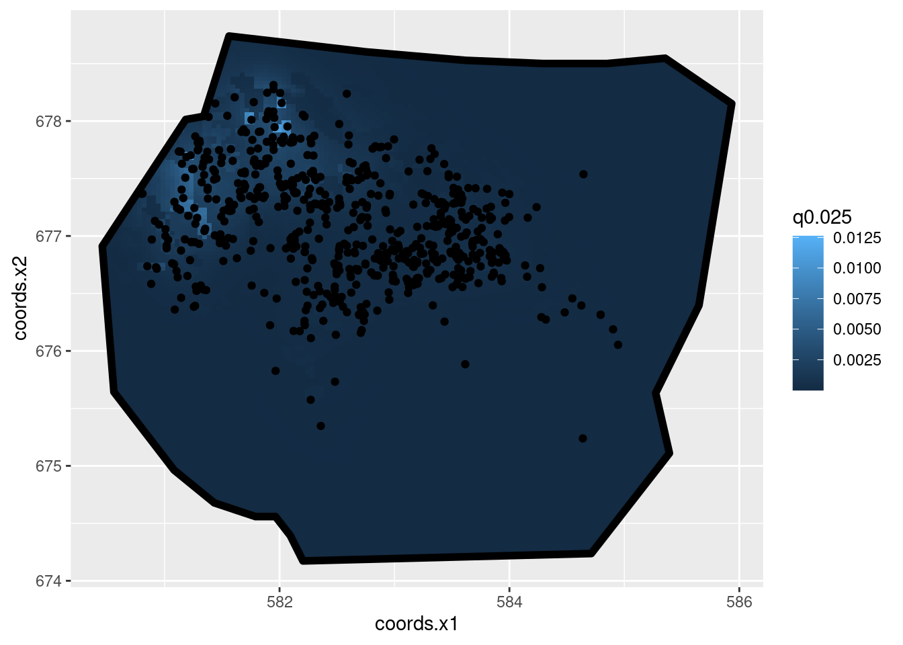
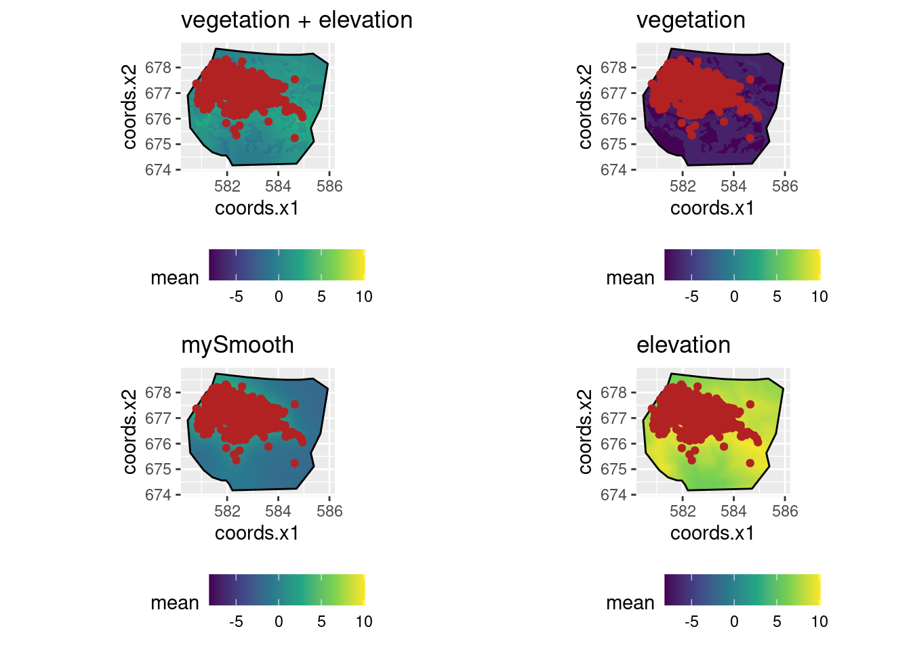
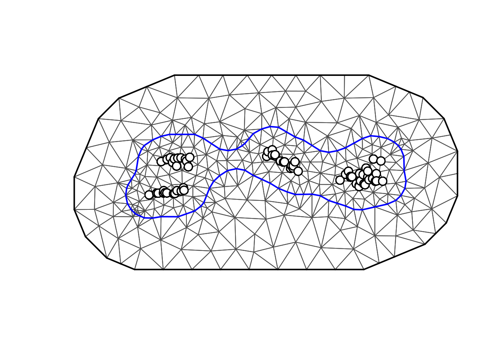
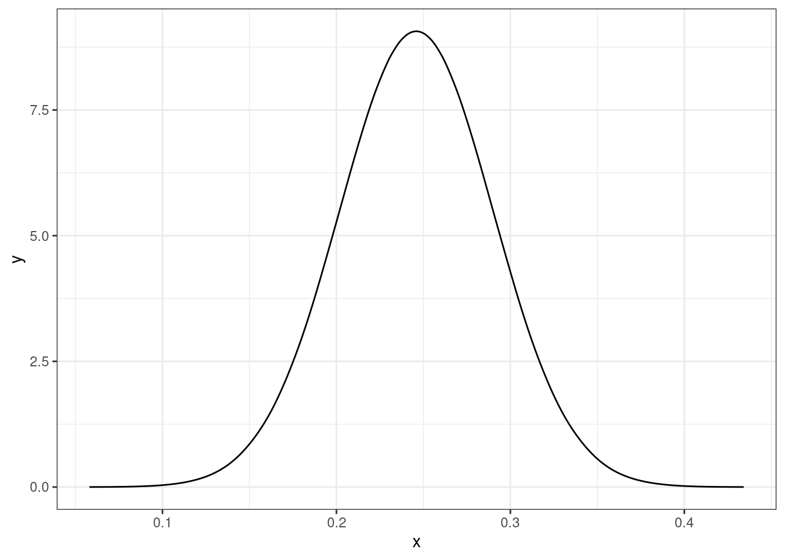
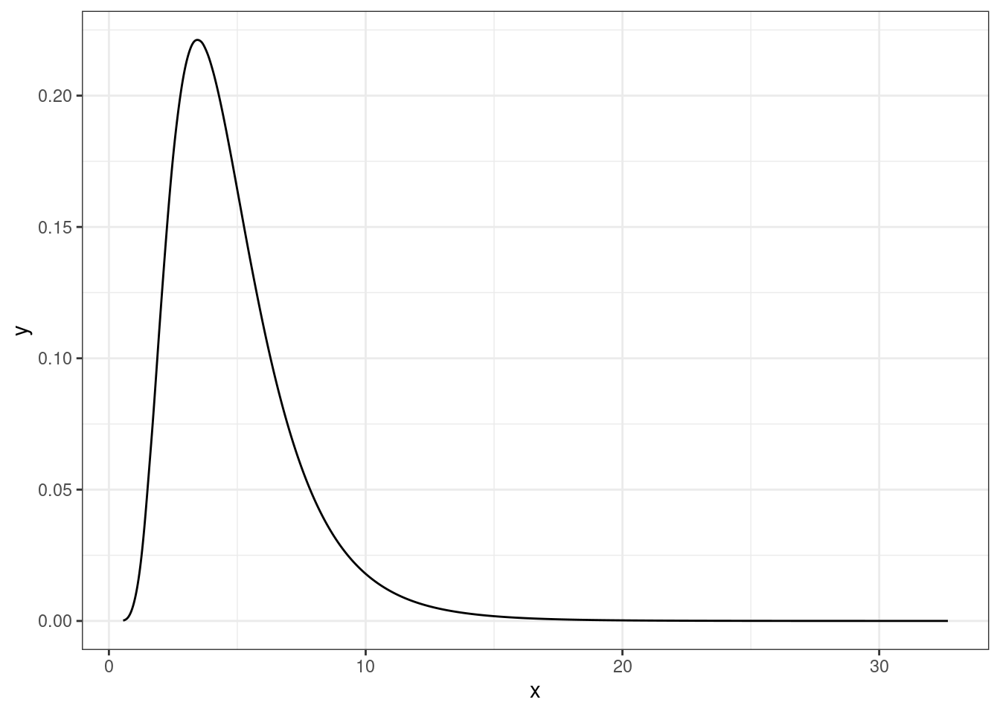
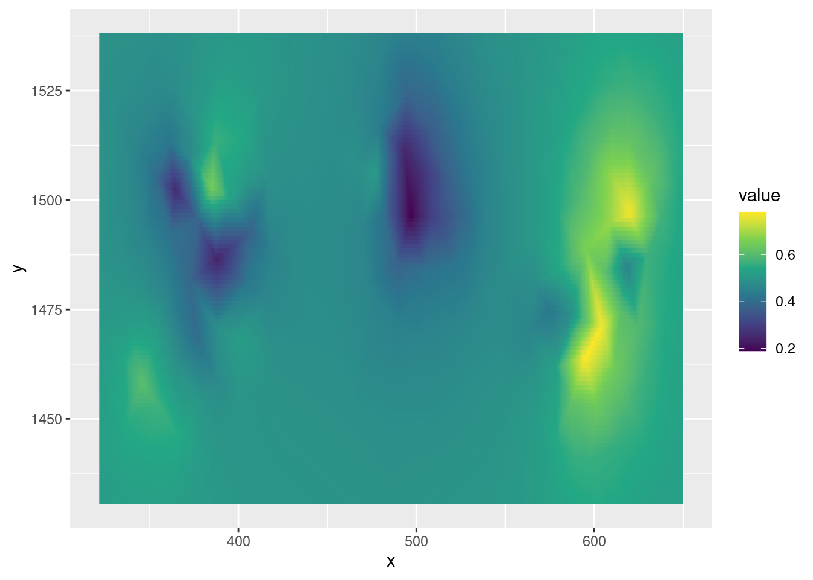
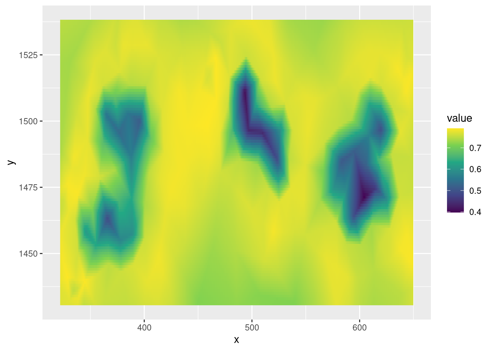

# Base de R INLA
install.packages("INLA",repos=c(getOption("repos"),INLA="https://inla.r-inla-download.org/R/stable"), dep=TRUE)
# inlabru wrapper
install.packages("inlabru")R INLA
Introduction
Présentation de la méthodologie INLA (integrated nested Laplace approximation) en utilisant les packages {INLA} et sa surcouche {inlabru}.
L’approximation de Laplace intégrée et imbriquée (INLA) est une approche de l’inférence statistique pour les modèles de champs aléatoires gaussiens latents (GMRF) introduite par Rue et Martino (2006). Elle fournit une alternative rapide et déterministe au MCMC qui était l’outil standard pour l’inférence de tels modèles. Le principal avantage de l’approche INLA par rapport à la MCMC est qu’elle est beaucoup plus rapide à calculer.
{inlabru} est une surcouche du package INLA, qui facilite l’utilisation du package R {INLA} en simplifiant la syntaxe. Ce package intègre deux extensions :
Modèles de type GAM (pour intégrer des prédicteurs non linéaires)
Processus de Cox log-Gaussien pour modéliser des processus univariés et spatiaux basés sur des données de comptages.
Sources :
Installation de INLA
Utilisation
Exemple 1
Setup
# Chargement des packages
library(INLA)
library(inlabru)
library(lme4) # pour comparer avec l'approche frequentiste
library(ggplot2)
library(ggpolypath)
library(RColorBrewer)
library(geoR)
library(tidyverse)Le dataset awards contient le nombre de réussites (num_awards) en math (math) pour une classe de 200 élèves. La réponse mesurée étant un comptage, nous devons spécifier un modèle généralisé avec fonction de lien Poisson.
# Chargement des donnees
load("data/awards.RData")
head(awards) num_awards prog math id
1 0 Vocational 41 1
2 0 General 41 2
3 0 Vocational 44 3
4 0 Vocational 42 4
5 0 Vocational 40 5
6 0 General 42 6La fonction bru_options_set permet de fixer des options sur des paramètres spécifiques à INLA.
bru_options_set(bru_verbose = TRUE,
control.compute = list(dic = TRUE, waic = TRUE))On peut récupérer ces paramètres avec :
bru_options_get()Application
Nous expliquons le nombre de récompenses obtenues en fonction de la note en math suivant le modèle \[Y_i\overset{ind}{\sim}\mathcal{P}(\exp(\mu+\alpha\cdot x_i))\,.\]
# Formulation du modele
cmp1 <- num_awards ~ math + 1
# Application de la formule avec un modèle de Poisson
fit.glm.bru <- bru(cmp1, family = "poisson", data = awards)iinla: Iteration 1 [max:1]summary(fit.glm.bru)inlabru version: 2.8.0
INLA version: 23.04.24
Components:
math: main = linear(math), group = exchangeable(1L), replicate = iid(1L)
Intercept: main = linear(1), group = exchangeable(1L), replicate = iid(1L)
Likelihoods:
Family: 'poisson'
Data class: 'data.frame'
Predictor: num_awards ~ .
Time used:
Pre = 0.545, Running = 0.224, Post = 0.0237, Total = 0.793
Fixed effects:
mean sd 0.025quant 0.5quant 0.975quant mode kld
math 0.086 0.010 0.067 0.086 0.105 0.086 0
Intercept -5.349 0.591 -6.508 -5.349 -4.191 -5.349 0
Deviance Information Criterion (DIC) ...............: 384.07
Deviance Information Criterion (DIC, saturated) ....: 208.02
Effective number of parameters .....................: 1.99
Watanabe-Akaike information criterion (WAIC) ...: 384.48
Effective number of parameters .................: 2.35
Marginal log-Likelihood: -204.02
is computed
Posterior summaries for the linear predictor and the fitted values are computed
(Posterior marginals needs also 'control.compute=list(return.marginals.predictor=TRUE)')Comparaison avec un GLM
cmp2 <- num_awards ~ math
fit2.glm <- glm(cmp2, family="poisson", data = awards)
summary(fit2.glm)
Call:
glm(formula = cmp2, family = "poisson", data = awards)
Coefficients:
Estimate Std. Error z value Pr(>|z|)
(Intercept) -5.333532 0.591261 -9.021 <2e-16 ***
math 0.086166 0.009679 8.902 <2e-16 ***
---
Signif. codes: 0 '***' 0.001 '**' 0.01 '*' 0.05 '.' 0.1 ' ' 1
(Dispersion parameter for poisson family taken to be 1)
Null deviance: 287.67 on 199 degrees of freedom
Residual deviance: 204.02 on 198 degrees of freedom
AIC: 384.08
Number of Fisher Scoring iterations: 6Les réponses sont proches.
Intégration d’un effet aléatoire
Pour prendre en compte le problème classique de surdispersion dans les données de comptages, il peut être intéressant de rajouter un effet aléatoire de la manière suivante.
\[Y_i\overset{ind}{\sim}\mathcal{P}(\exp(\mu+\alpha\cdot x_i+E_i)) \quad \text{avec}\quad E_i\overset{ind}{\sim}\mathcal{N}(0,\sigma^2).\]
cmp3 <- num_awards ~ math + 1 + rand.eff(map = 1:200, model = "iid", n = 200)
fit3.glmm.bru <- bru(cmp3, family = "poisson", data = awards)Warning in inlabru:::component.character("rand.eff", map = 1:200, model =
"iid", : Use of 'map' is deprecated and may be disabled; use 'main' instead.iinla: Iteration 1 [max:1]summary(fit3.glmm.bru)inlabru version: 2.8.0
INLA version: 23.04.24
Components:
math: main = linear(math), group = exchangeable(1L), replicate = iid(1L)
rand.eff: main = iid(1:200), group = exchangeable(1L), replicate = iid(1L)
Intercept: main = linear(1), group = exchangeable(1L), replicate = iid(1L)
Likelihoods:
Family: 'poisson'
Data class: 'data.frame'
Predictor: num_awards ~ .
Time used:
Pre = 0.351, Running = 0.216, Post = 0.045, Total = 0.611
Fixed effects:
mean sd 0.025quant 0.5quant 0.975quant mode kld
math 0.086 0.010 0.067 0.086 0.105 0.086 0
Intercept -5.349 0.591 -6.509 -5.349 -4.190 -5.349 0
Random effects:
Name Model
rand.eff IID model
Model hyperparameters:
mean sd 0.025quant 0.5quant 0.975quant mode
Precision for rand.eff 19903.65 19900.90 564.00 13861.13 74196.22 187.83
Deviance Information Criterion (DIC) ...............: 384.03
Deviance Information Criterion (DIC, saturated) ....: 207.97
Effective number of parameters .....................: 2.00
Watanabe-Akaike information criterion (WAIC) ...: 384.47
Effective number of parameters .................: 2.38
Marginal log-Likelihood: -204.09
is computed
Posterior summaries for the linear predictor and the fitted values are computed
(Posterior marginals needs also 'control.compute=list(return.marginals.predictor=TRUE)')Comparaison avec l’approche fréquentiste
cmp4<- num_awards ~ math + (1|id)
fit4.glmm<-glmer(cmp4, family = poisson, data = awards)
summary(fit4.glmm)Generalized linear mixed model fit by maximum likelihood (Laplace
Approximation) [glmerMod]
Family: poisson ( log )
Formula: num_awards ~ math + (1 | id)
Data: awards
AIC BIC logLik deviance df.resid
381.2 391.1 -187.6 375.2 197
Scaled residuals:
Min 1Q Median 3Q Max
-1.1653 -0.5518 -0.3760 0.3900 2.9242
Random effects:
Groups Name Variance Std.Dev.
id (Intercept) 0.3257 0.5707
Number of obs: 200, groups: id, 200
Fixed effects:
Estimate Std. Error z value Pr(>|z|)
(Intercept) -5.63163 0.70476 -7.991 1.34e-15 ***
math 0.08861 0.01161 7.634 2.28e-14 ***
---
Signif. codes: 0 '***' 0.001 '**' 0.01 '*' 0.05 '.' 0.1 ' ' 1
Correlation of Fixed Effects:
(Intr)
math -0.982On remarque que les résultats sont un peu moins comparables. Pour se rapprocher de glmer(), on peut modifier la loi a priori sur l’effet aléatoire.
cmp5 <- num_awards ~ math + 1 + rand.eff(map = 1:200, model = "iid", n = 200,
hyper=list(prec=list(param=c(10,0.1),
prior="pc.prec")))
fit5.glmm.bru <- bru(cmp5, family = "poisson", data = awards )Warning in inlabru:::component.character("rand.eff", map = 1:200, model =
"iid", : Use of 'map' is deprecated and may be disabled; use 'main' instead.iinla: Iteration 1 [max:1]summary(fit5.glmm.bru)inlabru version: 2.8.0
INLA version: 23.04.24
Components:
math: main = linear(math), group = exchangeable(1L), replicate = iid(1L)
rand.eff: main = iid(1:200), group = exchangeable(1L), replicate = iid(1L)
Intercept: main = linear(1), group = exchangeable(1L), replicate = iid(1L)
Likelihoods:
Family: 'poisson'
Data class: 'data.frame'
Predictor: num_awards ~ .
Time used:
Pre = 0.335, Running = 0.207, Post = 0.0439, Total = 0.586
Fixed effects:
mean sd 0.025quant 0.5quant 0.975quant mode kld
math 0.090 0.012 0.067 0.089 0.113 0.089 0
Intercept -5.651 0.692 -7.039 -5.641 -4.321 -5.621 0
Random effects:
Name Model
rand.eff IID model
Model hyperparameters:
mean sd 0.025quant 0.5quant 0.975quant mode
Precision for rand.eff 6.97 8.93 1.58 4.10 27.94 2.69
Deviance Information Criterion (DIC) ...............: 380.37
Deviance Information Criterion (DIC, saturated) ....: 204.31
Effective number of parameters .....................: 29.47
Watanabe-Akaike information criterion (WAIC) ...: 381.65
Effective number of parameters .................: 26.02
Marginal log-Likelihood: -204.62
is computed
Posterior summaries for the linear predictor and the fitted values are computed
(Posterior marginals needs also 'control.compute=list(return.marginals.predictor=TRUE)')Exemple 2
Dans le jeu de données gorillas, on cherche à comprendre la répartition de communautés de gorilles dans une région donnée en fonction de facteurs (végétations) ou de variable continue (altitude).
data(gorillas, package = "inlabru")On importe l’objet liste gorillas qui contient 4 sous-listes contenant les localisations d’habitats de gorilles (nests), le maillage de la zone d’intérêt (mesh), la frontière du domaine (boundary) et les variables explicatives (gcov).
nests <- gorillas$nests
mesh <- gorillas$mesh
boundary <- gorillas$boundary
gcov <- gorillas$gcov
summary(gcov$vegetation)Object of class SpatialPixelsDataFrame
Coordinates:
min max
x 580.1599 586.2320
y 673.8742 679.0378
Is projected: TRUE
proj4string :
[+proj=utm +zone=32 +datum=WGS84 +units=km +no_defs]
Number of points: 39600
Grid attributes:
cellcentre.offset cellsize cells.dim
x 580.1737 0.02760054 220
y 673.8885 0.02868664 180
Data attributes:
vegetation
Colonising: 48
Disturbed :23606
Grassland : 7001
Primary : 7725
Secondary : 788
Transition: 432 La construction du maillage peut se faire avec les fonctions de {INLA}:
inla.mesh.2d(),inla.mesh.create(),inla.mesh.1d(),inla.mesh.basis(),inla.spde2.pcmatern().
voir la vignette suivante pour quelques exemples: https://inlabru-org.github.io/inlabru/articles/random_fields_2d.html.
Visualisation des données gorilles
ggplot() +
gg(gcov$vegetation) +
gg(boundary) +
gg(nests, color = "white", cex = 0.5) +
coord_equal()Regions defined for each Polygons
ggplot() +
gg(gcov$vegetation) +
gg(mesh) +
gg(boundary) +
gg(nests, color = "white", cex = 0.5) +
coord_equal()Regions defined for each Polygons
Les graphiques ci-dessus permettent de visualiser les différents types de végétations ainsi que les localisations d’habitat de gorilles dans la zone d’étude. Il est également possible de rajouter le maillage construit sur la zone. {inlabru} propose la fonction gg() permettant avac la grammaire ggplot2 de rajouter les différentes couches d’informations.
Modèle 1
On peut supposer un processus ponctuel spatial d’intensité \[\lambda(x,y)=\exp(\alpha_i(x,y))\] où \(\alpha\) est un paramètre correspondant à un type de végétation (modélisation factor full sans intercept donc).
comp1 <- coordinates ~ vegetation(gcov$vegetation, model = "factor_full") - 1
comp1alt <- coordinates ~ vegetation(gcov$vegetation, model = "factor_contrast") + 1Pour construire un modèle expliquant les comptages de gorilles avec leurs répartitions dans la zone d’étude et prenant en compte les types de végétations, nous définissons la formule avec:
coordinates()la fonction de {sp} de récupération des coordonnées des habitats dans l’objetnestsvegetationsera le mot utilisé dans les sorties du modèle faisant référence à la variable explicativegcov$vegetation(possible d’écrire le mot que l’on veut…)model = "factor_full"est pour indiquer que la variable explicative est un facteur. Il est possible d’utiliser “factor_full”, “factor_contrast” etc… suivant les types de contraintes que l’on souhaite appliquer au modèle. “factor_full” indique estimations de toutes les modalités mais il faut alors supprimer l’intercept afin d’être dans un cas identifiable.
Après avoir défini la formule du modèle, on estime les paramètres en utilisant la fonction lgcp() qui permet de modéliser un processus log-normalisé de Cox. Cette fonction est une surcouche de la fonction de base bru().
Le LGCP est un modèle probabiliste de processus ponctuel observé dans un tissu spatial ou temporel.
fit1 <- lgcp(components = comp1, # formule du modèle
data = nests, # data set
samplers = boundary, # frontière de la zone d'étude
domain = list(coordinates = mesh) # maillage de la zone
)iinla: Iteration 1 [max:1]fit1 estime l’intensité des présences de gorilles dans la zone d’étude. Il est alors possible de représenter l’intensité moyenne de ces habitats:
pred.df <- fm_pixels(mesh, mask = boundary, format = "sp")
int1 <- predict(fit1, pred.df, ~ exp(vegetation))
ggplot() +
gg(int1) +
gg(boundary, alpha = 0, lwd = 2) +
gg(nests, color = "DarkGreen") +
coord_equal()Regions defined for each Polygons
Pour visualiser les résultats du modèle, nous utilisons la fonction predict() (sans oublier de passer à l’exponentielle) et fm_pixels() qui en prenant la zone d’étude (mesh + frontière) crée l’objet spatial adéquat.
Nous remarquons que les intensités sont les plus fortes dans la végétation Primaire, ce qui est logique. Ici, l’intensité représente le nombre d’habitats de gorilles par unité de surface. Attention donc à comment vous définissez les coordonnées de vos zones d’études.
En utilisant les fonctions fm_int()et predict() nous allons tenter d’estimer les abondances moyennes sachant que nous savons qu’il y a 647 habitats en réalité:
ips <- fm_int(mesh, boundary)
Lambda1 <- predict(fit1, ips, ~ sum(weight * exp(vegetation)))
Lambda1 mean sd q0.025 q0.5 q0.975 median mean.mc_std_err
1 648.4464 24.40695 607.5679 650.7602 700.2498 650.7602 2.440695
sd.mc_std_err
1 1.63577# Calcul de la surface de la zone
sum(ips$weight) # some des surfaces de chaque triangle du mesh[1] 19.87366sf::st_area(sf::st_as_sf(boundary)) # surface totale 19.87366 [km^2]Modèle avec utilisation SPDE
Dans cette section, nous allons essayer d’expliquer la répartition des habitats en rajoutant au facteur vegetation une modélisation SPDE (Stochastic partial differential equations). Il faut pour cela compléter la définition du maillage par l’ajout d’une structure de Matérn en utilisant la fonction {INLA} inla.spde2.pcmatern() puis réécrire la définition de la formule du modèle INLA. Le modèle intègre alors un champ gaussien avec covariance de Matérn. \[\lambda(x,y)=\exp(\alpha_i(x,y)+\xi(x,y))\] avec \(\xi\) suivant un champ gaussien.
pcmatern <- inla.spde2.pcmatern(mesh,
prior.sigma = c(0.1, 0.01),
prior.range = c(0.1, 0.01)
)
comp2 <- coordinates ~
-1 +
vegetation(gcov$vegetation, model = "factor_full") +
elevation(gcov$elevation) +
mySmooth(coordinates, model = pcmatern)
fit2 <- lgcp(components = comp2,
data = nests,
samplers = boundary,
domain = list(coordinates = mesh))iinla: Iteration 1 [max:1]On représente l’intensité médiane de la surface:
int2 <- predict(fit2, pred.df, ~ exp(mySmooth + vegetation), n.samples = 1000)
ggplot() +
gg(int2, aes(fill = q0.025)) +
gg(boundary, alpha = 0, lwd = 2) +
gg(nests) +
coord_equal()Regions defined for each Polygons
et l’intensité intégrée attendue (moyenne des abondances):
Lambda2 <- predict(fit2,
fm_int(mesh, boundary),
~ sum(weight * exp(mySmooth + vegetation)))
Lambda2 mean sd q0.025 q0.5 q0.975 median mean.mc_std_err
1 0.4559292 0.7428501 0.004647021 0.1824485 2.871949 0.1824485 0.07428501
sd.mc_std_err
1 0.1336252Examinons les contributions au prédicteur linéaire de la partie SPDE et de celle due à la végatation.
La fonction scale_fill_gradientn() définit l’échelle pour la légende du graphique. Dans cet exemple, on la définit telle que cela prenne en compte toute la gamme de valeurs des 3 prédicteurs linéaires. Par défaut, ce sont les médianes qui sont représentées.
lp2 <- predict(fit2,
pred.df, ~ list(
smooth_veg = (mySmooth + vegetation + elevation),
not_smooth = (vegetation + elevation),
smooth = (mySmooth),
veg = (vegetation),
ele = (elevation)
))
lprange <- range(lp2$smooth_veg$median, lp2$smooth$median, lp2$veg$median, lp2$ele$median, lp2$not_smooth$median)
plot.lp2 <- ggplot() +
gg(lp2$not_smooth) +
theme(legend.position = "bottom") +
gg(boundary, alpha = 0) +
ggtitle("vegetation + elevation") +
gg(nests, color = "firebrick") +
scale_fill_viridis_c(limits = lprange) +
coord_equal()Regions defined for each Polygonsplot.lp2.spde <- ggplot() +
gg(lp2$smooth) +
theme(legend.position = "bottom") +
gg(boundary, alpha = 0) +
ggtitle("mySmooth") +
gg(nests, color = "firebrick") +
scale_fill_viridis_c(limits = lprange) +
coord_equal()Regions defined for each Polygonsplot.lp2.veg <- ggplot() +
gg(lp2$veg) +
theme(legend.position = "bottom") +
gg(boundary, alpha = 0) +
ggtitle("vegetation") +
gg(nests, color = "firebrick") +
scale_fill_viridis_c(limits = lprange) +
coord_equal()Regions defined for each Polygonsplot.lp2.ele <- ggplot() +
gg(lp2$ele) +
theme(legend.position = "bottom") +
gg(boundary, alpha = 0) +
ggtitle("elevation") +
gg(nests, color = "firebrick") +
scale_fill_viridis_c(limits = lprange) +
coord_equal()Regions defined for each Polygonsmultiplot(plot.lp2, plot.lp2.spde, plot.lp2.veg, plot.lp2.ele, cols = 2)
Exemple 3
Nous nous intéressons à un jeu de données concernant la prévalence de la malaria en Gambie (disponible dans le package {geoR}). Cet exemple est repris du livre “Spatial and Spatio-temporal Bayesian Models with R-INLA”.
data(gambia, package = "geoR")
# les coordonnées correspondent au village où se trouve les enfants
# create one index for each of the 65 villages
village_index <- unite(gambia, col = "lon_lat", sep = "_", "x", "y") %>%
pull("lon_lat") %>%
factor(labels = 1:65)
gambia <- gambia %>%
add_column(village_index) On transforme le jeu de données en type {SpatialPointsDataFrame}.
gambia <- gambia %>%
mutate(x = x * 0.001, # to km
y = y * 0.001, # to km
age = age / 365)
coordinates(gambia) <- c("x", "y")
class(gambia)[1] "SpatialPointsDataFrame"
attr(,"package")
[1] "sp"On définit ensuite un maillage pour le champ spatial avec un maillage plus fin dans la zone où il y a des observations et qui “déborde” avec un maillage plus grossier.
hull = inla.nonconvex.hull(gambia,convex = -0.1)
gambia_mesh <- inla.mesh.2d(boundary = hull,
offset = c(30, 60), max.edge = c(20,40))
plot(gambia_mesh,main="",asp=1)
points(gambia,pch=21,bg="white",cex=1.5,lwd=1.5)
On définit à partir du maillage le champ spatial spde qui correspond à un champ spatial gaussien avec une covariance Matérn. Nous considérons les lois a priori par défaut sur les paramètres de variance et de portée du champ spatial.
gambia_spde <- inla.spde2.matern(mesh = gambia_mesh, alpha=2)Tout est prêt pour définir le modèle à ajuster et son estimation : Pour l’enfant \(j\) du village \(i\), nous supposons \[Y_{ij}|V_i\overset{ind}{\sim}b(p_{ij})\] avec \[S_i\sim GRF, \quad V_i\overset{ind}{\sim}\mathcal{N}(0,\sigma^2_V)\] et \[p_{ij}=\mu+\beta_1 \cdot treated_{ij}+\beta_2 \cdot netuse_{ij}+\beta_3 \cdot age_{ij}+\beta_4 \cdot green_{ij}+\beta_5\cdot phc_{ij}+S_i+V_i.\]
formula = pos ~ -1 +
Intercept(1) +
treated +
netuse +
age +
green +
phc +
spatial_field(coordinates, model=gambia_spde) +
village(village_index, model="iid")
fit <- bru(components = formula,
data = gambia,
family= "binomial"
)iinla: Iteration 1 [max:1]summary(fit)inlabru version: 2.8.0
INLA version: 23.04.24
Components:
Intercept: main = linear(1), group = exchangeable(1L), replicate = iid(1L)
treated: main = linear(treated), group = exchangeable(1L), replicate = iid(1L)
netuse: main = linear(netuse), group = exchangeable(1L), replicate = iid(1L)
age: main = linear(age), group = exchangeable(1L), replicate = iid(1L)
green: main = linear(green), group = exchangeable(1L), replicate = iid(1L)
phc: main = linear(phc), group = exchangeable(1L), replicate = iid(1L)
spatial_field: main = spde(coordinates), group = exchangeable(1L), replicate = iid(1L)
village: main = iid(village_index), group = exchangeable(1L), replicate = iid(1L)
Likelihoods:
Family: 'binomial'
Data class: 'SpatialPointsDataFrame'
Predictor: pos ~ .
Time used:
Pre = 0.726, Running = 1.36, Post = 0.0815, Total = 2.17
Fixed effects:
mean sd 0.025quant 0.5quant 0.975quant mode kld
Intercept -1.295 1.282 -3.733 -1.327 1.312 -1.398 0
treated -0.387 0.201 -0.782 -0.387 0.006 -0.387 0
netuse -0.347 0.157 -0.655 -0.347 -0.039 -0.347 0
age 0.246 0.044 0.159 0.246 0.332 0.246 0
green 0.012 0.025 -0.038 0.012 0.060 0.014 0
phc -0.323 0.227 -0.772 -0.322 0.122 -0.321 0
Random effects:
Name Model
spatial_field SPDE2 model
village IID model
Model hyperparameters:
mean sd 0.025quant 0.5quant 0.975quant mode
Theta1 for spatial_field 1.32 0.837 -0.172 1.26 3.10 1.04
Theta2 for spatial_field -2.50 0.708 -4.006 -2.45 -1.24 -2.27
Precision for village 4.83 2.423 1.683 4.32 10.97 3.45
Deviance Information Criterion (DIC) ...............: 2326.24
Deviance Information Criterion (DIC, saturated) ....: 2326.24
Effective number of parameters .....................: 48.46
Watanabe-Akaike information criterion (WAIC) ...: 2325.39
Effective number of parameters .................: 46.41
Marginal log-Likelihood: -1227.34
is computed
Posterior summaries for the linear predictor and the fitted values are computed
(Posterior marginals needs also 'control.compute=list(return.marginals.predictor=TRUE)')On peut accéder aux distributions marginales des effets aléatoires et des hyperparamètres :
fit$summary.random
fit$summary.hyperparNous pouvons tracer les distributions a posteriori marginales des effets, par exemple :
age <- fit$marginals.fixed[[4]]
ggplot(data.frame(inla.smarginal(age)), aes(x, y)) +
geom_line() +
theme_bw()
rfprecision <- fit$marginals.hyperpar$`Precision for village`
ggplot(data.frame(inla.smarginal(rfprecision)), aes(x, y)) +
geom_line() +
theme_bw()
Nous essayons de représenter le champs gaussien latent
domain_lims <- apply(hull$loc, 2, range)
grd_dims <- round(c(x = diff(domain_lims[, 1]),
y = diff(domain_lims[, 2])) / 1)
mesh_proj <- fm_evaluator(
gambia_mesh,
xlim = domain_lims[, 1], ylim = domain_lims[, 2], dims = grd_dims
)
spatial_field <- data.frame(
median = inla.link.invlogit(fit$summary.random$spatial_field$"0.5quant"),
range95 = (inla.link.invlogit(fit$summary.random$spatial_field$"0.975quant") -
inla.link.invlogit(fit$summary.random$spatial_field$"0.025quant"))
)
predicted_field <- fm_evaluate(mesh_proj, spatial_field) %>%
as.matrix() %>%
as.data.frame() %>%
bind_cols(expand.grid(x = mesh_proj$x, y = mesh_proj$y), .) %>%
pivot_longer(cols = -c("x", "y"),
names_to = "metric",
values_to = "value")
# Median
ggplot(filter(predicted_field, metric == "median")) +
aes(x = x, y = y, fill = value) +
geom_raster() +
scale_fill_viridis_c()
# 95% range
ggplot(filter(predicted_field, metric == "range95")) +
aes(x = x, y = y, fill = value) +
geom_raster() +
scale_fill_viridis_c()
References
- https://www.pymc.io/projects/examples/en/latest/gaussian_processes/log-gaussian-cox-process.html
- Fabian E. Bachl, Finn Lindgren, David L. Borchers, and Janine B. Illian (2019), inlabru: an R package for Bayesian spatial modelling from ecological survey data, Methods in Ecology and Evolution, British Ecological Society, 10, 760–766, doi:10.1111/2041-210X.13168
- Funwi-Gabga, N. and Mateu, J. (2012) Understanding the nesting spatial behaviour of gorillas in the Kagwene Sanctuary, Cameroon. Stochastic Environmental Research and Risk Assessment 26 (6), 793-811.
- https://www.muscardinus.be/2018/07/inlabru-bru/
- https://inlabru-org.github.io/inlabru/index.html